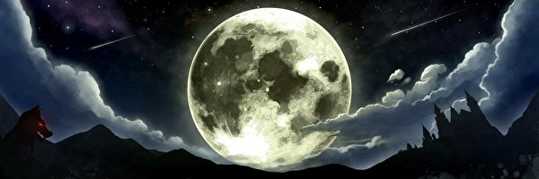

La Luna
La Luna es el único satélite natural de la Tierra. Con un diámetro ecuatorial de 3474,8 km, es el quinto satélite más grande del sistema solar, mientras que en cuanto al tamaño proporcional respecto a su planeta es el satélite más grande: un cuarto del diámetro de la Tierra y 1/81 de su masa.
 A pesar de ser, en apariencia, el objeto más brillante en el cielo después del Sol, su superficie es en realidad muy oscura, con una reflexión similar a la del carbón. Su prominencia en el cielo y su ciclo regular de fases han hecho de la Luna un objeto con importante influencia cultural desde la antigüedad, tanto en el lenguaje como en el calendario, el arte o la mitología.
LA CORTEZA DE LA LUNA
Desde la misión Apolo 17, en 1972, ha sido visitada únicamente por sondas espaciales no tripuladas, en particular por el astromóvil soviético Lunojod 2. Desde 2004, Japón, China, India, Estados Unidos y la Agencia Espacial Europea han enviado orbitadores. Estas naves espaciales han confirmado el descubrimiento de agua helada fijada al regolito lunar en cráteres que se encuentran en la zona de sombra permanente y están ubicados en los polos. Se han planeado futuras misiones tripuladas a la Luna, pero no se han puesto en marcha aún.